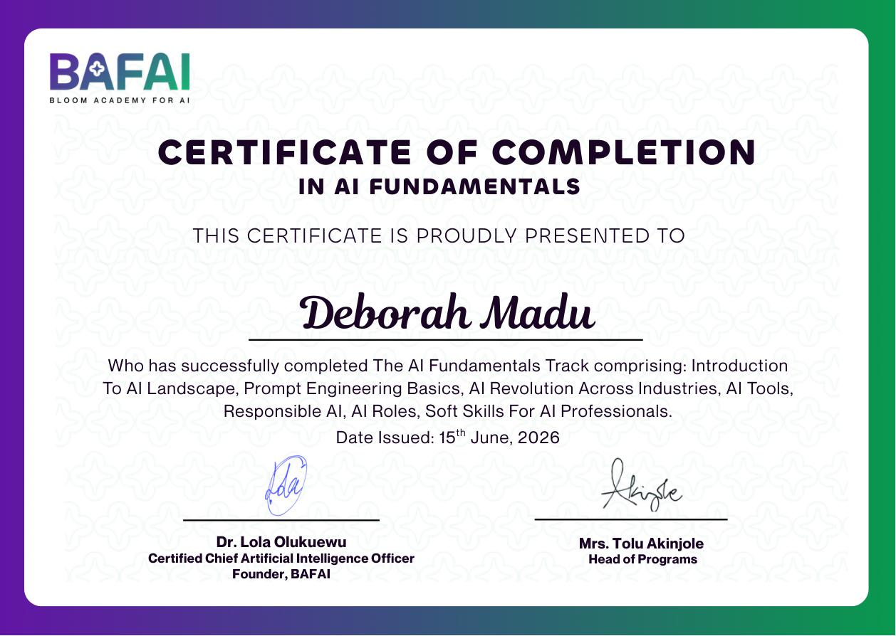

BIOCHEMISTRY · TECHNOLOGY · RESEARCH
Understanding life. Connecting knowledge. Advancing healthcare.
Biochemistry Graduate | Aspiring Biomedical Informatics Scientist
Advancing biomedical research through data, technology and scientific collaboration.
01 / ABOUT ME
Science with a broader perspective.
I am a Biochemistry graduate from the University of Maiduguri, with a growing interest in the intersection of biomedical science, technology and healthcare innovation. My academic journey has strengthened my understanding of biological processes, human health and the importance of research in addressing healthcare challenges.
Through my undergraduate research, laboratory training and hospital internship experience, I have developed an appreciation for scientific investigation, evidence-based thinking and the role of data in understanding health and disease. I am particularly interested in biomedical informatics, healthcare data, artificial intelligence and their potential to advance biomedical research and healthcare delivery.
Beyond academics, I enjoy leadership, collaboration and science communication. My experience in departmental organisation has strengthened my ability to coordinate activities, work with people and contribute to shared goals. Through INSIDE YOU, my podcast, I also explore ways to make scientific and health-related knowledge more accessible.
I am continually learning, building new skills and exploring opportunities that connect science, technology and meaningful human impact. My long-term aspiration is to grow into a biomedical informatics scientist and research leader, contributing to research and innovations that improve healthcare.
Education
University of Maiduguri
B.Sc. Biochemistry — 2026
Academic requirements completed; official statement of results pending.
02 / SKILLS & EXPERTISE
Knowledge, skills and capabilities.
Biomedical & Laboratory
Biochemical analysis
Phytochemical screening
Microbiology laboratory practice
Haematology and chemical pathology
Laboratory safety and procedures
Research & Data
Scientific research
Experimental design
One-way ANOVA
Data interpretation
Scientific writing and presentation
Communication & Leadership
Science communication
Podcast hosting
Team collaboration
Event coordination
Meeting documentation
Digital & Professional
AI fundamentals
Product management foundations
Product feedback and testing
Task coordination and follow-up
Healthcare technology interests
03 / EXPERIENCE & LEADERSHIP
Learning through experience and collaboration.
NOVEMBER 2026 — PRESENT
Product Management Intern
ActiveTechConsult
Supporting product-team coordination and communication, meeting organisation, documentation, task follow-up and communication with developers. Also gaining exposure to product feedback and testing processes.
JUNE — DECEMBER 2025
Student Intern
Biu General Hospital
Completed clinical laboratory internship experience across microbiology, chemical pathology, haematology and blood bank departments, gaining exposure to hospital laboratory practices and diagnostic workflows.
DEPARTMENTAL LEADERSHIP
Departmental Organising Secretary
Department of Biochemistry
Contributed to departmental activities, including the organisation of freshers' orientation, academic lessons for junior colleagues and other student-focused activities. Supported coordination, communication and collaborative planning.
SCIENCE COMMUNICATION
Podcast Host — INSIDE YOU
Health and Biochemistry Communication
Host of INSIDE YOU, a podcast exploring health-related and scientific knowledge. The podcast has reached listeners in more than eight countries.
Podcast link to be added.
04 / CERTIFICATIONS & LEARNING
Continuous learning. Growing perspectives.
AI Fundamentals Track
Bloom Academy for AI
VIEW CERTIFICATE +
AI Fundamentals Track
Bloom Academy for AI
Completed the AI Fundamentals Track, developing foundational knowledge of artificial intelligence and its applications.

Select the certificate image to view it.
05 / ACADEMIC PROJECTS
Research, investigation and scientific inquiry.
Selected academic work reflecting my interest in biomedical science, experimental investigation and scientific communication.
UNDERGRADUATE RESEARCH · 2026
Antinociceptive Activity of Aqueous
Leaf Extract of
Mitracarpus hirtus (L.) DC.
in Wistar Strain Albino Rats
VIEW RESEARCH DETAILS +
UNDERGRADUATE RESEARCH · 2026
Antinociceptive Activity of Aqueous Leaf Extract of Mitracarpus hirtus (L.) DC. in Wistar Strain Albino Rats
Research overview
This undergraduate research investigated the antinociceptive activity of aqueous leaf extract of Mitracarpus hirtus in Wistar strain albino rats.
Aim
To assess the antinociceptive activity of aqueous leaf extract of Mitracarpus hirtus in Wistar strain albino rats.
Research objectives
- Conduct qualitative phytochemical screening of the aqueous leaf extract.
- Determine the acute oral toxicity of the extract in the animal model.
- Evaluate the antinociceptive activity of the extract.
Methodology
The study involved aqueous extraction of authenticated plant leaves, qualitative phytochemical screening and acute oral toxicity assessment.
Antinociceptive activity was evaluated using established animal-model assessment methods, including the hot plate test and acetic acid-induced writhing test. Experimental groups included a negative control, a positive control and groups receiving different extract doses.
Key findings
- Phytochemical screening detected alkaloids, flavonoids, tannins, phenols, terpenoids and proteins. Saponins were absent.
- No mortality was observed at the tested doses up to 5,000 mg/kg in the acute toxicity assessment.
- The hot plate test showed a significant difference between treatment groups at 120 minutes (F(4,20) = 139.87, p < 0.001).
- The 800 mg/kg extract group recorded a mean reaction time of 10.08 ± 0.34 seconds.
- In the writhing test, treatment groups differed significantly (F(4,20) = 4.13, p = 0.013). The 400 mg/kg extract group recorded the highest inhibition among the extract-treated groups, at 53.41%.
Conclusion
The findings suggest that the aqueous leaf extract demonstrated antinociceptive potential in the animal models used in this study. The results provide a basis for further scientific investigation.
These findings are preclinical and do not establish effectiveness or safety in humans.
Academic presentation
The research underwent internal and external defence in October 2026 at the University of Maiduguri.
ACADEMIC SEMINAR · JULY 2026
Biochemistry of Lactose Digestion
and Lactase Deficiency
VIEW SEMINAR DETAILS +
ACADEMIC SEMINAR · JULY 2026
Biochemistry of Lactose Digestion and Lactase Deficiency
Project overview
An academic seminar and literature review examining the enzymatic digestion of lactose, lactase activity at the intestinal brush border, absorption of glucose and galactose, and the biochemical mechanisms underlying lactase deficiency and lactose intolerance.
Topics explored
- Structure and biochemical properties of lactose.
- The role of intestinal lactase in lactose digestion.
- Absorption of glucose and galactose.
- Types and causes of lactase deficiency.
- Biochemical mechanisms underlying lactose intolerance.
- Clinical and nutritional implications and dietary management.
Academic contribution
The seminar strengthened my understanding of digestive biochemistry and the relationship between enzyme activity, nutrient absorption and human health.
Presented in July 2026.
06 / RESEARCH INTERESTS
Where science meets technology.
My interests are centred on the use of scientific knowledge, data and emerging technologies to understand biological systems and contribute to healthcare innovation.
Biomedical Informatics
Exploring how information, data and computational approaches can support biomedical research and healthcare.
Healthcare Data
Understanding how healthcare information can be organised, analysed and interpreted to support evidence-based decisions.
Artificial Intelligence
Exploring AI applications in biomedical research, healthcare systems and scientific problem-solving.
Biomedical Research
Interested in experimental science, biological investigation and research that contributes to understanding health and disease.
Public Health
Interested in the connection between scientific knowledge, population health and healthcare improvement.
Science Communication
Making scientific and health-related knowledge more accessible through communication and collaboration.
07 / CONTACT
Let's connect and create meaningful impact.
I welcome opportunities for learning, collaboration, research engagement and professional growth across biomedical science, technology and healthcare innovation.
Practical projects and GitHub portfolio will be added as I develop them.